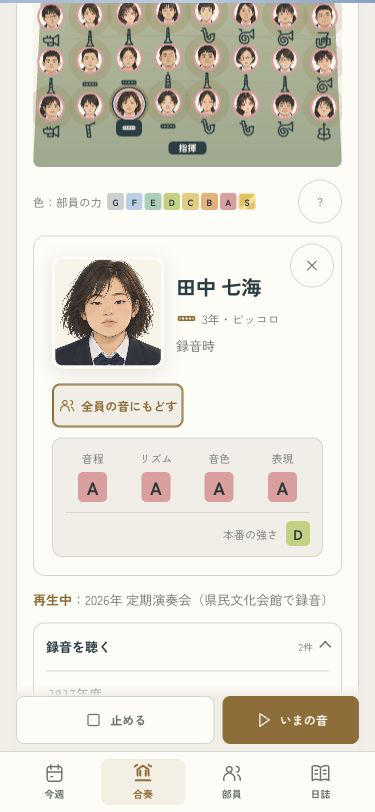
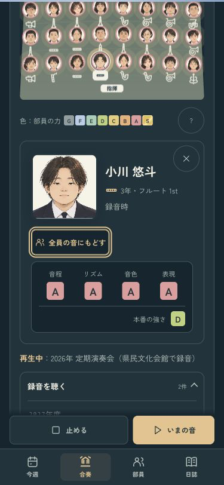
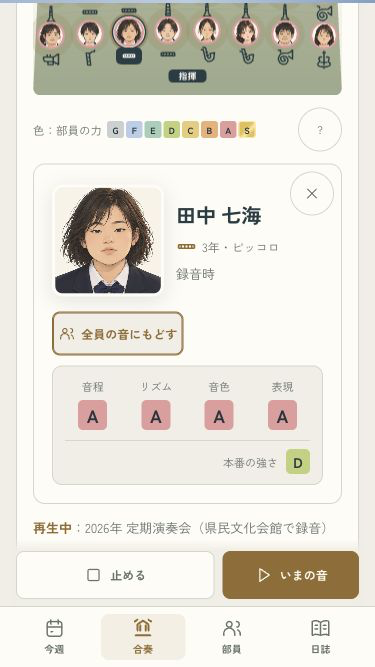
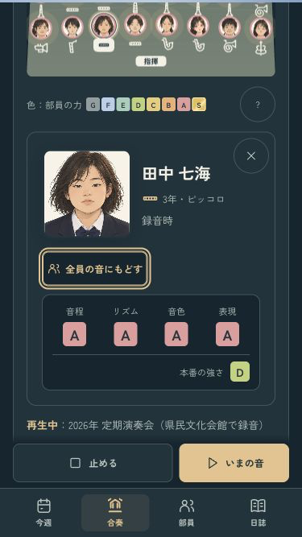

B · 舞台の中へ
あの日の音を、一人ずつ。
録音の顔を開き、同じボタンで本人と全員を聴き比べられます。別の人を開く・閉じると全員の音へ戻り、録音はそのまま続きます。


小さい画面でも
375×667でも顔・名前・切り替え・ランクを表示し、下から録音を止められます。


全15曲・待機からの切り替え・自然終了・1年分の進行を確認済み。
iPhoneへ更新し、起動に成功。実機の見た目と音はオーナー側で確認します。
ミラーリングなし · codex/design · pushなし · 変更と確認の記録